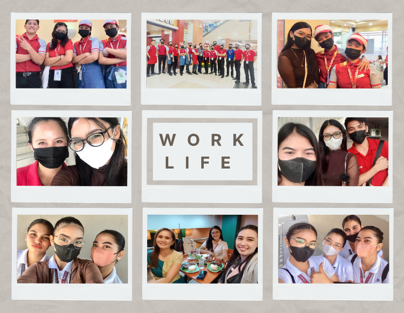
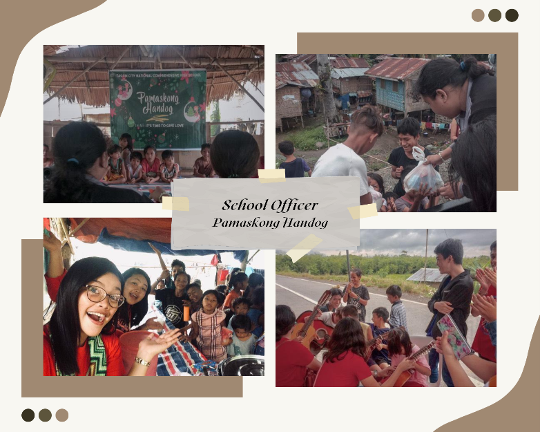
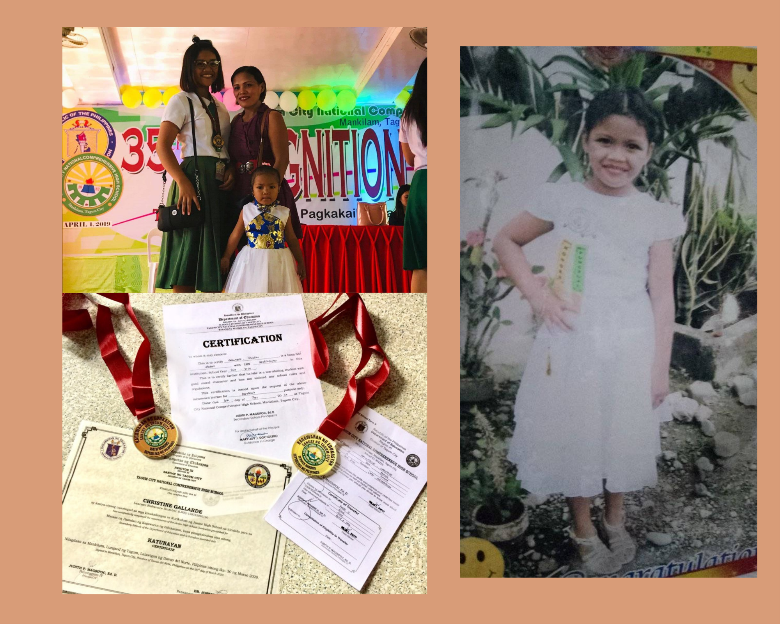

Undeterred by Life's Storms: Navigating Challenges with Grace and Strength
I'm proud to say that from a young age, life was not a gentle breeze but a relentless storm, testing me in ways I never imagined. Challenges that were uncommon for a child became my constant companions, weaving a tapestry of resilience and strength into the fabric of my being. The weight of responsibility fell upon my young shoulders. The scarcity of resources forced me to grow up quickly and understand the value of hard work and the importance of making do with what we had. These challenges, though daunting, did not break me. Instead, they forged within me a spirit of unwavering determination. I learned to face adversity with a resolute heart and to find strength in the face of hardship. As I grew older, I realized that my challenges were not a curse but a blessing in disguise. They had molded me into a strong, independent woman, capable of navigating the storms of life with grace and resilience. To those who are battling their own storms, embrace the challenges, for they are the seeds of strength. Let resilience be your compass and compassion your guiding light. Through perseverance and an unwavering spirit, you too can emerge from the storms, stronger, wiser, and more determined than ever before.
A Grandmother's Love: A Beacon of Unwavering Support and Grace
Growing up with my grandmother is a privilege that not everyone is fortunate enough to experience. She played a unique role in my life, she offered me a blend of love, wisdom, and support that shaped my character and values in profound ways. Even if she already passed away 5 years ago, her presence in my childhood life provides a sense of security, belonging, and unconditional love that has a long-lasting impact on my life, and I have had it all my life.
Embraced by Grace: A Journey of Faith and Fellowship at the Christian Life Center Family
To be saved by God's grace and to be a part of the Christian Life Center Family is a blessing beyond measure. It is a privilege to walk alongside fellow believers, to share in the joys and sorrows of life, and to witness the transformative power of faith. I am forever grateful for this extraordinary gift, and I pledge to continue my journey of spiritual growth, guided by the love and grace of God.

Youthful Resilience: Thriving in Early Professional Experiences
Looking back year 2022, I am immensely proud of my decision to enter the workforce in my first job as a cashier of Jollibee company and after that, as a customer assistant in Gaisano Mall of Tagum, at the age of 18. The challenges I faced, the lessons I learned, and the rewards I reaped have shaped me into the individual I am today. I am grateful for the opportunity to have experienced the reality of working life at a young age, an experience that has undoubtedly prepared me for the challenges and triumphs that lie ahead.

Nurturing Empathy and Leadership: Shaping Character Through School Governance
At some point, my time as a school officer way back junior high school days was a transformative experience that shaped my character, instilled within me a sense of purpose, and fueled my desire to make a positive impact on the world. It taught me the importance of empathy, compassion, and the power of leadership. I am forever grateful for the opportunity to have served my school community in this capacity, and I carry the lessons learned with me throughout my life.

Unwavering Commitment: The Discipline of Academic Excellence
Being a consistent honor student is such a flex for me. That consistency defined my academic journey. From elementary to high school, I maintained a steadfast commitment to learning. Being an honor student wasn't just about grades; it was about embracing a mindset of continuous improvement. That journey taught me resilience and discipline. Even if I lose that character the moment I enter college, I'm still believing that one day I'll be back to who I was before. Now, still in the process of equipping myself again to build a passion for learning as I step into the future.